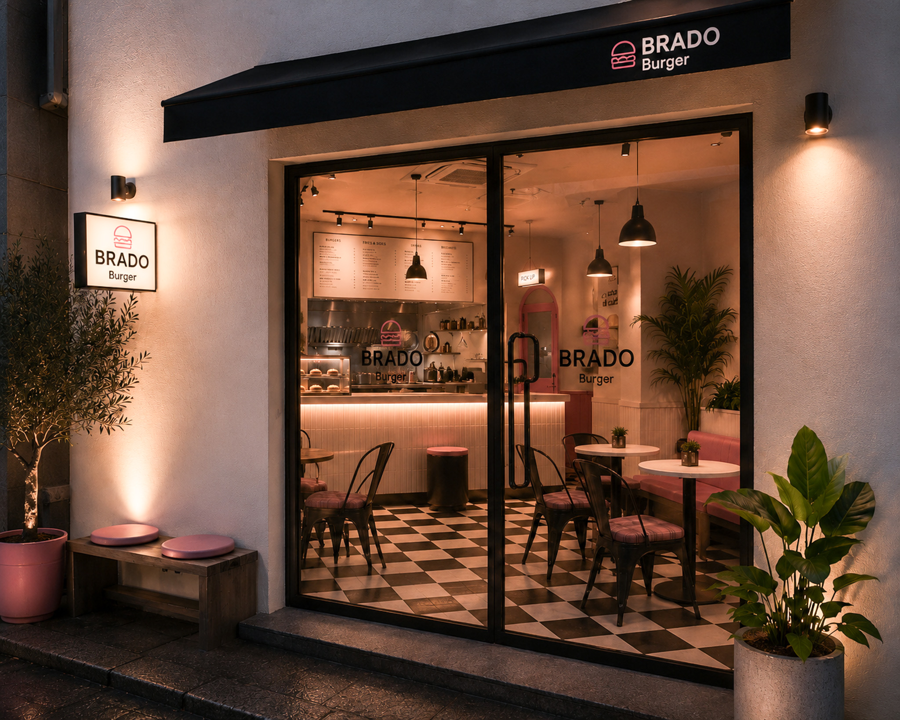
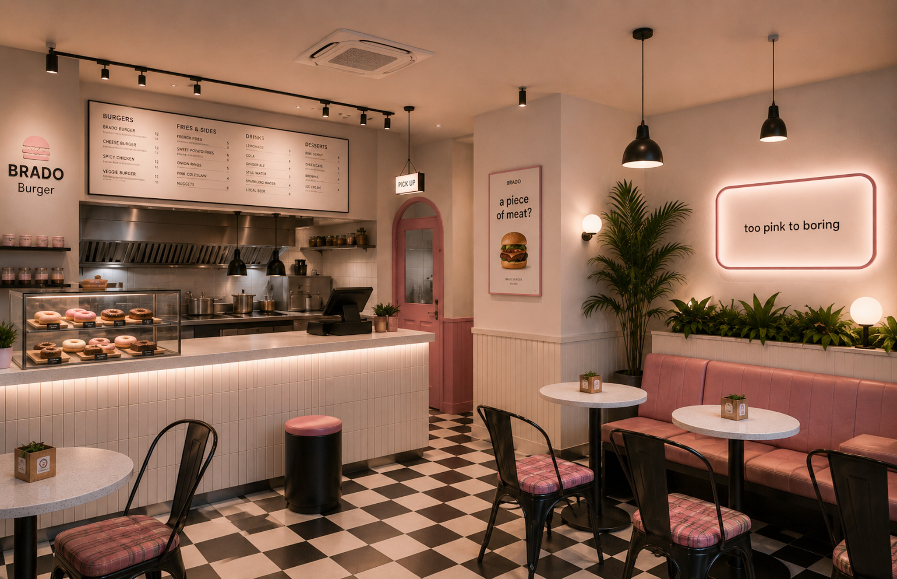
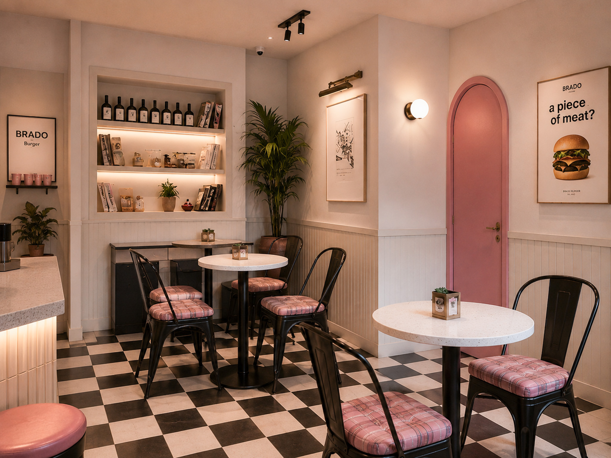
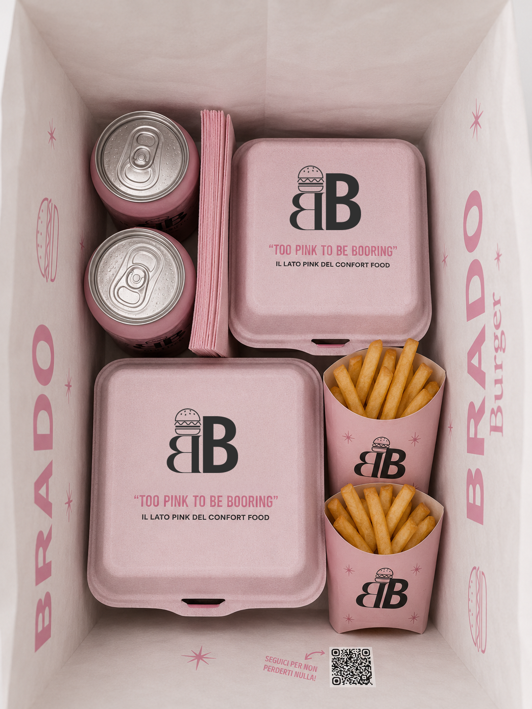

Progetti
Brado Burger
Un’identità bold per uno street food contemporaneo, caldo e riconoscibile.
Brado Burger nasce come progetto di brand identity per un locale food pensato per distinguersi dai codici visivi tradizionali del settore. L’identità combina tipografia decisa, contrasti netti e un’estetica urbana contemporanea, creando un linguaggio visivo riconoscibile e immediato. La direzione creativa è stata sviluppata per adattarsi in modo coerente a tutti i touchpoint del brand: insegne, packaging, social media e materiali di servizio; mantenendo sempre una forte personalità visiva e una comunicazione chiara, dinamica e memorabile.




